คู่มือใช้งานเครื่องมือ · ระดับ Free
การประเมินเตาอุตสาหกรรม
Process Heating Assessment
FREE
สำหรับช่างเทคนิคที่เพิ่งเริ่มงาน — อ่านแล้วทำตามได้เอง
ใช้เวลาฝึกประมาณ 60 นาที
เคสตัวอย่าง: โรงงาน A เตาอุ่นเหล็กแท่ง 12 t/h ก๊าซธรรมชาติ (ข้อมูลสมมุติ)
อ.หนึ่ง กลับทวี / Aj. Nueng Klubtavee
tripleeenergytools.com
หน้าจอเครื่องมือ — เปิดได้จากเมนู Free ของเว็บไซต์
รุ่นเครื่องมือ: Free commit beaf5b5 · จับภาพ 17 พ.ย. 2569 · คู่มือ Rev00
เครื่องมือนี้ตอบคำถามอะไร
คู่มือใช้งาน · การประเมินเตาอุตสาหกรรม (Process Heating Assessment) · ระดับ Free
2 / 32
| คำถามหน้างาน | ดูที่ไหน | เคสโรงงาน A ได้ |
|---|---|---|
| เตาใช้เชื้อเพลิงเท่าไร | 📊 ผลลัพธ์ | 6,516 kW (HHV) · 449.4 kg/h |
| ความร้อนไปไหนบ้าง | ตารางสมดุล + Sankey | ชิ้นงาน 35.52 % · ปล่อง 57.56 % |
| เตาดีแค่ไหนเมื่อเทียบเกณฑ์ | KPI & Benchmark | η 39.4 % (LHV) · ช่วง 35–55% |
| ลด O₂ / อุ่นอากาศ / หุ้มฉนวน ประหยัดเท่าไร | ⚖️ เปรียบเทียบมาตรการ | สร้างมาตรการอัตโนมัติ 4 แบบ |
| หน้างานต้องวัดอะไร ตรวจอะไร | 🧰 Field Audit | จุดวัด + checklist + วินิจฉัยอาการ |
| ส่งรายงาน / เก็บงานไว้ทำต่อ | 🖨️ รายงาน · 💾 .json | พิมพ์เป็น PDF |
💡 เคล็ดลับ
ใช้กับเตาที่ใช้เชื้อเพลิงทั้งเตาให้ความร้อน/อบ (reheating, heat treat) และเตาหลอม (reverberatory) — คำนวณตามแนวทาง PHAST/MEASUR ที่เครื่องมือระบุ
แผนที่หน้าจอ
คู่มือใช้งาน · การประเมินเตาอุตสาหกรรม (Process Heating Assessment) · ระดับ Free
3 / 32
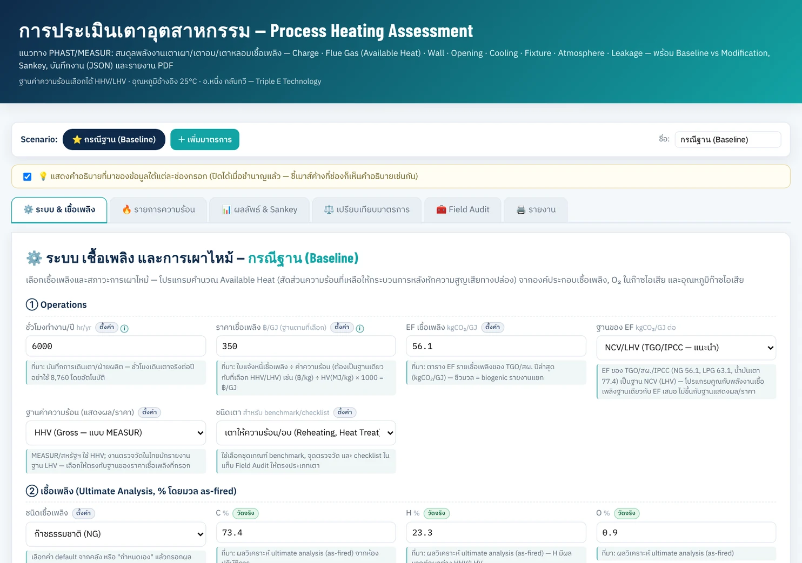
1
2
3
4
5
1
แถบ Scenario — กรณีฐาน และมาตรการที่สร้าง
2
เปิด/ปิดคำอธิบายที่มาของข้อมูลใต้ช่องกรอก
3
แท็บ 6 แท็บ ทำจากซ้ายไปขวา
4
ช่องกรอกของแท็บแรก (Operations)
5
ป้ายชนิดค่า: วัดจริง · ออกแบบ · ตั้งค่า · คำนวณ
ข้อความเทาใต้ช่องบอก "ที่มา" ว่าค่านั้นเอามาจากไหน — อ่านก่อนกรอกทุกช่อง
แท็บ: ระบบ & เชื้อเพลิง → รายการความร้อน → ผลลัพธ์ → เปรียบเทียบมาตรการ → Field Audit → รายงาน
⚠️ ระวัง
หน้านี้ไม่บันทึกข้อมูลไว้ในเครื่อง — ปิดหน้าแล้วข้อมูลหาย เก็บงานด้วยปุ่ม 💾 บันทึกงาน (.json)
เปิดบนมือถือ และสลับภาษา
คู่มือใช้งาน · การประเมินเตาอุตสาหกรรม (Process Heating Assessment) · ระดับ Free
4 / 32
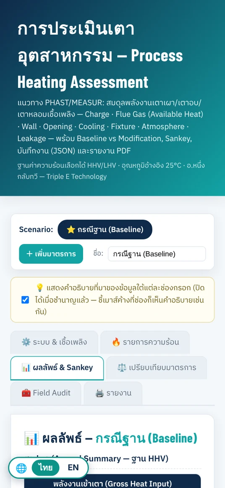
บนมือถือหน้าจอเรียงคอลัมน์เดียว แถบแท็บขึ้นเป็นหลายแถว กดได้ตามปกติ
ภาพนี้คือแท็บ 📊 ผลลัพธ์ หลังกดคำนวณ — เลื่อนลงเพื่ออ่านผล
ปุ่ม ไทย | EN ลอยอยู่ด้านล่าง กดสลับภาษาได้ ค่าที่กรอกไว้ไม่หาย
💡 เคล็ดลับ
ช่องกรอกมีมาก — จดค่าหน้างานลงตาราง Field Audit หรือกระดาษ แล้วกรอกบนคอมพิวเตอร์จะเร็วกว่า
คำศัพท์ 8 คำที่ต้องรู้ก่อนเริ่ม
คู่มือใช้งาน · การประเมินเตาอุตสาหกรรม (Process Heating Assessment) · ระดับ Free
5 / 32
| คำ | ความหมายแบบสั้น | จำง่าย ๆ |
|---|---|---|
| Available Heat | สัดส่วนความร้อนเชื้อเพลิงที่เหลือใช้ในเตา หลังหักความร้อนที่ไอเสียพาออก | ยิ่งสูงยิ่งดี |
| Gross Heat Input | พลังงานเชื้อเพลิงที่ต้องป้อนเข้าเตา (kW) | = ความร้อนที่ใช้ ÷ AH |
| HHV · LHV | ค่าความร้อนสูง · ต่ำ (LHV ไม่นับความร้อนแฝงไอน้ำในไอเสีย) | NG: LHV ≈ 0.90 × HHV |
| O₂ (dry) · Excess Air | O₂ ในไอเสียแห้ง → อากาศที่ป้อนเกินความต้องการ | O₂ สูง = อากาศเกินมาก |
| Charge | ความร้อนที่เข้าชิ้นงาน = ความร้อนที่ได้ประโยชน์ | ตัวตั้งของ η |
| η เตา | ความร้อนเข้าชิ้นงาน ÷ Gross Heat Input | KPI เทียบเกณฑ์ใช้ฐาน LHV |
| SEC | พลังงานเชื้อเพลิงต่อตันชิ้นงาน (MJ/ตัน) | ใช้ติดตามเดือนต่อเดือน |
| Recuperator | อุปกรณ์ดึงความร้อนไอเสียไปอุ่นอากาศเผาไหม้ | อากาศร้อน = เชื้อเพลิงลด |
💡 เคล็ดลับ
จำภาพเดียว: เชื้อเพลิงเข้า → ส่วนหนึ่งออกปล่อง → ที่เหลือ (Available Heat) จ่ายให้ชิ้นงาน + ผนัง + ช่องเปิด + น้ำหล่อเย็น + อื่น ๆ
เตรียมเครื่องมือวัดและข้อมูลก่อนเริ่ม
คู่มือใช้งาน · การประเมินเตาอุตสาหกรรม (Process Heating Assessment) · ระดับ Free
6 / 32
| ค่าที่ต้องมี | เครื่องมือ/แหล่งข้อมูล | ค่าโรงงาน A |
|---|---|---|
| O₂ ในไอเสีย (% dry) | Flue gas analyzer ที่ทางออกเตา | 5 % |
| อุณหภูมิไอเสียออกจากเตา | Thermocouple จุดเดียวกับ O₂ (ก่อน recuperator) | 950 °C |
| อุณหภูมิอากาศเผาไหม้ · แวดล้อม | Thermocouple / เทอร์โมมิเตอร์ | 30 · 30 °C |
| เชื้อเพลิง · ราคา ฿/GJ | ใบรับรองผู้ขาย/ห้องแล็บ · ใบแจ้งหนี้ | NG · 350 (HHV) |
| อัตราป้อนชิ้นงาน · T เข้า-ออก | บันทึกการผลิต · pyrometer / IR | 12,000 kg/h · 30→1,150 °C |
| พื้นที่ผนัง · T ผิวเฉลี่ย | แบบเตา · กล้องถ่ายภาพความร้อน | 150 m² · 85 °C |
| ช่องเปิด: ขนาด · % เวลาเปิด | ตลับเมตร · จับเวลารอบงาน | 2 ช่อง 1.2×0.5 m · 15 % |
| น้ำหล่อเย็น: อัตราไหล · ΔT | มิเตอร์น้ำ · เทอร์โมมิเตอร์เข้า-ออก | 8 m³/h · 6 °C |
⚠️ ระวัง
วัด O₂ กับอุณหภูมิไอเสียที่จุดเดียวกัน ก่อนมีอากาศรั่วเข้าเจือจาง — O₂ ที่วัดหลังจุดรั่วสูงเกินจริง ทำให้ผลประหยัดของการจูนสูงเกินจริงด้วย
ขั้นที่ 1
ปุ่มหลักของแท็บแรก
คู่มือใช้งาน · การประเมินเตาอุตสาหกรรม (Process Heating Assessment) · ระดับ Free
7 / 32
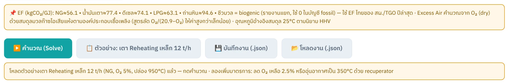
1
2
3
4
5
1
📋 ตัวอย่าง — โหลดเคสโรงงาน A ทั้งหน้า
2
▶️ คำนวณ (Solve) — กดทุกครั้งหลังแก้ค่า
3
💾 บันทึกงาน (.json) — ทุก scenario
4
📂 โหลดงาน (.json) — เปิดงานเดิมทำต่อ
5
ข้อความยืนยันหลังโหลดตัวอย่าง
ฝึกครั้งแรก: กด 📋 แล้วกด ▶️ — ผลต้องได้ Gross 6,516 kW (HHV)
งานจริง: กรอกทับค่าตัวอย่างทีละแท็บ แล้วกด ▶️ (มีปุ่มนี้ในแท็บรายการความร้อนด้วย)
แถบเหลืองด้านบน = หมายเหตุ EF และวิธีคิด Excess Air ของเครื่องมือ
ขั้นที่ 2
Operations: ชั่วโมง ราคา EF และฐานค่าความร้อน
คู่มือใช้งาน · การประเมินเตาอุตสาหกรรม (Process Heating Assessment) · ระดับ Free
8 / 32
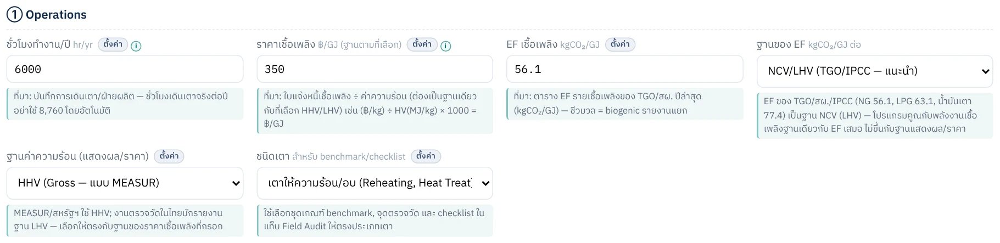
1
2
3
4
5
6
1
ชั่วโมงเดินเตาจริง/ปี — 6,000
2
ราคาเชื้อเพลิง ฿/GJ — 350
3
EF — 56.1 kgCO₂/GJ (NG)
4
ฐานของ EF — NCV/LHV (ตาราง TGO/IPCC)
5
ฐานค่าความร้อน HHV/LHV ของการแสดงผลและราคา
6
ชนิดเตา — เลือกชุดเกณฑ์และ checklist
ราคา ฿/GJ = (฿/kg) ÷ (MJ/kg) × 1,000 — ค่าความร้อนที่หารต้องเป็นฐานเดียวกับช่อง 5
⚠️ ระวัง
ราคาต้องฐานเดียวกับช่อง 5 — ราคาฐาน LHV แต่เลือก HHV ค่าเชื้อเพลิงต่อปีผิดทั้งรายงาน (ดู What-if)
ขั้นที่ 3
เชื้อเพลิง: เลือกชนิด ตรวจองค์ประกอบ
คู่มือใช้งาน · การประเมินเตาอุตสาหกรรม (Process Heating Assessment) · ระดับ Free
9 / 32
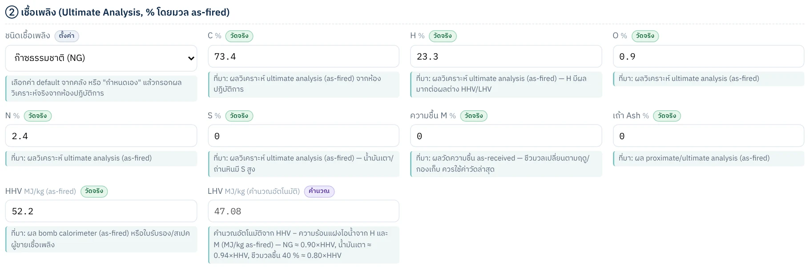
1
2
3
4
5
1
ชนิดเชื้อเพลิง — เลือกแล้วเติมค่าให้ทั้งแถว
2
H % — มีผลมากกับผลต่าง HHV/LHV
3
ความชื้น M % (สำคัญกับชีวมวล)
4
HHV MJ/kg as-fired — 52.2
5
LHV คำนวณให้ = 47.08 MJ/kg
ทุกช่องเป็น % โดยมวล แบบ as-fired (ตามที่ป้อนเข้าเตาจริง)
มีผลวิเคราะห์จากห้องแล็บ → เลือก "กำหนดเอง (Custom)" แล้วกรอกทับ
💡 เคล็ดลับ
ค่าในคลังเป็นค่าตั้งต้นของเครื่องมือ — มีใบรับรองคุณภาพเชื้อเพลิงของโรงงานให้ใช้ค่าจริง
ขั้นที่ 4
การเผาไหม้และก๊าซไอเสีย
คู่มือใช้งาน · การประเมินเตาอุตสาหกรรม (Process Heating Assessment) · ระดับ Free
10 / 32
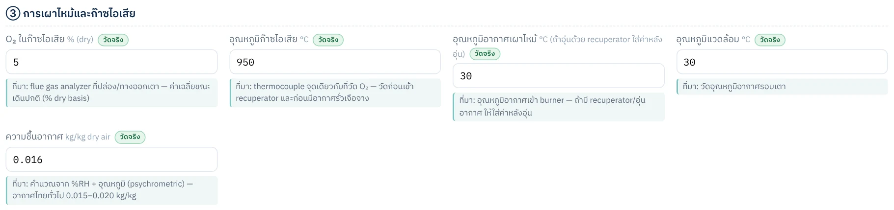
1
2
3
4
5
1
O₂ (dry) — 5 %
2
อุณหภูมิไอเสีย — 950 °C
3
อากาศเผาไหม้ — 30 °C (มี recuperator ใส่ค่าหลังอุ่น)
4
อุณหภูมิแวดล้อม — เติมให้การ์ดผนังด้วย
5
ความชื้นอากาศ 0.016 kg/kg (อากาศไทยทั่วไป)
Excess Air คำนวณจาก O₂ ด้วยสมดุลมวลไอเสียแห้ง — เคสนี้ได้ 28.1 %
กรอก O₂ ฐานแห้ง (dry) — ตรวจในคู่มือเครื่องวัดว่ารายงานฐานใด
⚠️ ระวัง
อุณหภูมิไอเสีย = ไอเสียที่ออกจากห้องเตา ก่อนเข้า recuperator — ใช้ค่าหลัง recuperator ได้ Available Heat สูงเกินจริง
ขั้นที่ 5
แท็บรายการความร้อน: ชิ้นงาน (Charge)
คู่มือใช้งาน · การประเมินเตาอุตสาหกรรม (Process Heating Assessment) · ระดับ Free
11 / 32
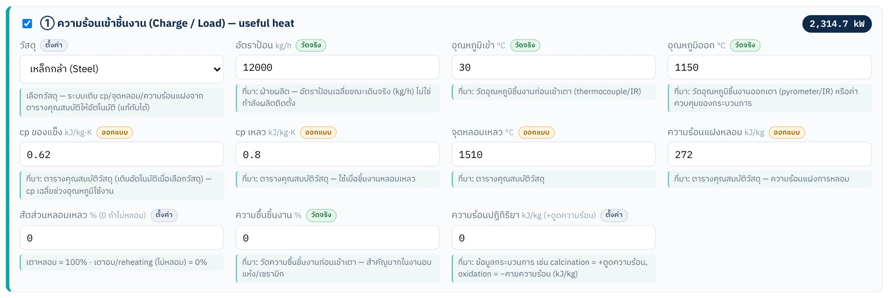
1
2
3
4
5
6
7
1
ติ๊ก ✓ เปิดการ์ด — ชิ้นงานต้องเปิดเสมอ
2
วัสดุ — เติม cp จุดหลอม ความร้อนแฝงให้
3
อัตราป้อนเฉลี่ยขณะเดินจริง — 12,000 kg/h
4
T เข้า — 30 °C
5
T ออก — 1,150 °C
6
สัดส่วนหลอม — 0 % (เตาหลอม 100 %)
7
ผล 2,314.7 kW (ขึ้นหลังกดคำนวณ)
ตรวจเลข: 12,000 × 0.62 × (1,150 − 30) ÷ 3,600 = 2,314.7 kW
ความชื้นชิ้นงาน / ความร้อนปฏิกิริยา ใส่ 0 ถ้าไม่มี (สำคัญกับงานอบแห้ง เผาเซรามิก)
ขั้นที่ 6
ผนังเตาและช่องเปิด
คู่มือใช้งาน · การประเมินเตาอุตสาหกรรม (Process Heating Assessment) · ระดับ Free
12 / 32
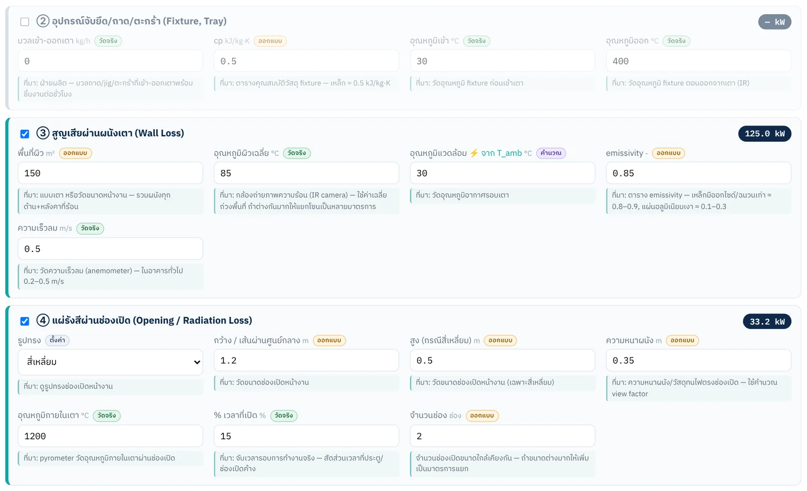
1
2
3
4
5
6
7
8
9
1
การ์ดที่ไม่มีในเตา ปล่อยว่าง — การ์ดจาง ไม่ถูกนับ
2
พื้นที่ผิวร้อน — 150 m²
3
T ผิวเฉลี่ย — 85 °C
4
emissivity — 0.85
5
ความเร็วลมรอบเตา — 0.5 m/s
6
ขนาดช่องเปิด — 1.2 × 0.5 m
7
T ในเตา — 1,200 °C
8
% เวลาที่เปิด — 15 % · 2 ช่อง
9
ผลช่องเปิด 33.2 kW
ผล: ผนัง 125.0 kW · ช่องเปิด 33.2 kW
💡 เคล็ดลับ
ผนังร้อนไม่เท่ากันมาก → ใช้ค่าเฉลี่ยถ่วงพื้นที่ หรือแยกโซน ตามคำแนะนำใต้ช่อง
ขั้นที่ 7
น้ำหล่อเย็น และความสูญเสียอื่น
คู่มือใช้งาน · การประเมินเตาอุตสาหกรรม (Process Heating Assessment) · ระดับ Free
13 / 32
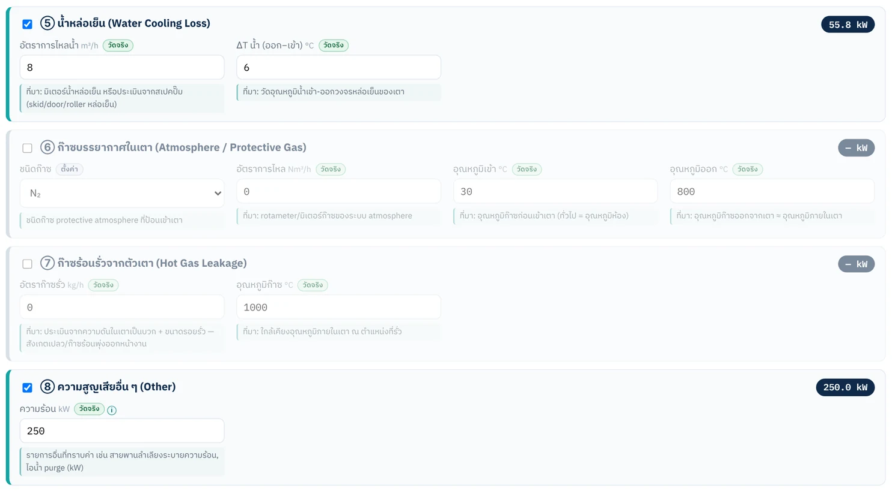
1
2
3
4
5
6
1
อัตราน้ำหล่อเย็น — 8 m³/h
2
ΔT น้ำ ออก − เข้า — 6 °C
3
ก๊าซบรรยากาศในเตา — ไม่มี (ปิด)
4
ก๊าซร้อนรั่ว — ไม่มี (ปิด)
5
อื่น ๆ — 250 kW ที่ไม่ได้แยกคิด
6
ป้าย kW ของการ์ด
น้ำหล่อเย็น: 8 × 1,000 × 4.186 × 6 ÷ 3,600 = 55.8 kW
"อื่น ๆ" = ความสูญเสียที่ทราบค่าแต่ไม่มีการ์ด — เคส A = 3.84 % ของ Gross
⚠️ ระวัง
อย่าใส่ "อื่น ๆ" เพียงเพื่อให้ผลตรงกับมิเตอร์เชื้อเพลิง — เขียนที่มาของตัวเลขในรายงานทุกครั้ง
เครื่องมือคิดอย่างไร — ตัวเลขโรงงาน A
คู่มือใช้งาน · การประเมินเตาอุตสาหกรรม (Process Heating Assessment) · ระดับ Free
14 / 32
| ขั้น | สูตร | โรงงาน A |
|---|---|---|
| 1. ความร้อนที่ต้องใช้ ΣQ | ชิ้นงาน + ผนัง + ช่องเปิด + น้ำ + อื่น ๆ | 2,779 kW |
| 2. ความร้อนไอเสียพาออก | ไอเสียแห้ง + ไอน้ำ (kJ ต่อ kg เชื้อเพลิง) | 20,291 + 9,116 + 642 |
| 3. Available Heat | (HHV − ข้อ 2 + เครดิตอากาศ) ÷ HHV | เครดิต 108 → 42.64 % |
| 4. Gross Heat Input | ΣQ ÷ Available Heat | 2,779 ÷ 0.4264 = 6,516 kW |
| 5. เชื้อเพลิง | Gross × 3,600 ÷ HHV (kJ/kg) | 449.4 kg/h |
| 6. η เตา | ชิ้นงาน ÷ Gross | HHV 35.52 % · LHV 39.4 % |
ตัวเลขทุกขั้นอยู่ในหัวข้อ "ขั้นตอนการคำนวณ" ท้ายแท็บผลลัพธ์ (HHV ของ NG = 52,200 kJ/kg)
เครดิตอากาศ = อากาศเผาไหม้ที่ร้อนกว่าอุณหภูมิอ้างอิง 25 °C นำความร้อนเข้าเตา
💡 เคล็ดลับ
cp ของก๊าซไอเสียใช้ค่าประมาณเชิงเส้น — เครื่องมือระบุว่าคลาดเคลื่อนราว 1–2 % เพียงพอสำหรับประเมินภาคสนาม
ขั้นที่ 8
อ่านผลสรุป (แท็บผลลัพธ์)
คู่มือใช้งาน · การประเมินเตาอุตสาหกรรม (Process Heating Assessment) · ระดับ Free
15 / 32
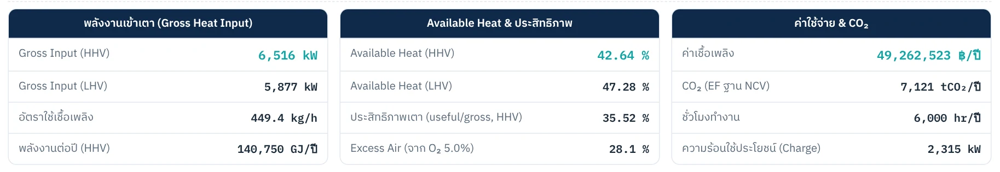
1
2
3
4
5
6
7
1
Gross Input (HHV) = 6,516 kW · LHV 5,877 kW
2
อัตราใช้เชื้อเพลิง 449.4 kg/h
3
Available Heat 42.64 % (HHV)
4
η เตา (HHV) 35.52 %
5
Excess Air 28.1 %
6
ค่าเชื้อเพลิง 49,262,523 ฿/ปี
7
CO₂ 7,121 tCO₂/ปี (EF ฐาน NCV)
กด ▶️ คำนวณ แล้วเครื่องมือพามาแท็บนี้เอง · พลังงาน 140,750 GJ/ปี
💡 เคล็ดลับ
เทียบเชื้อเพลิงที่คำนวณ (449.4 kg/h) กับมิเตอร์จริง — ต่างกันมาก ให้ทบทวนรายการความร้อนที่ขาดและค่าที่วัด
KPI งานตรวจวัด และ Benchmark
คู่มือใช้งาน · การประเมินเตาอุตสาหกรรม (Process Heating Assessment) · ระดับ Free
16 / 32
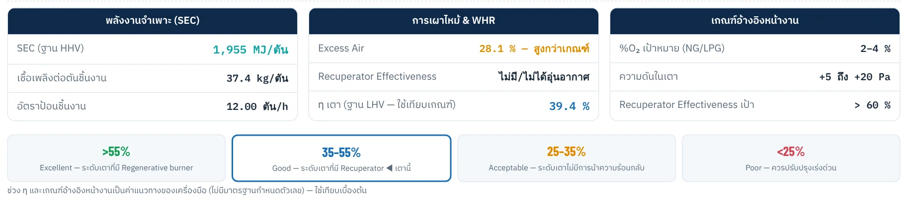
1
2
3
4
5
6
7
1
SEC 1,955 MJ/ตัน · 37.4 kg/ตัน
2
Excess Air 28.1 % — สูงกว่าเกณฑ์
3
Recuperator: ไม่มี/ไม่ได้อุ่นอากาศ
4
η ฐาน LHV 39.4 % — ใช้เทียบเกณฑ์
5
เกณฑ์อ้างอิงหน้างาน (O₂ · ความดันเตา)
6
ช่วงของเตานี้ 35–55%
7
หมายเหตุ: ค่าแนวทางของเครื่องมือ
⚠️ ระวัง
ป้ายแต่ละช่วงบอก "ระดับที่เตาแบบนั้นมักทำได้" ไม่ได้บอกว่าเตานี้มี recuperator — โรงงาน A ไม่ได้อุ่นอากาศ แต่ η อยู่ช่วง 35–55% · ไม่มีมาตรฐานกำหนดตัวเลขช่วงเหล่านี้
ตารางสมดุลพลังงาน
คู่มือใช้งาน · การประเมินเตาอุตสาหกรรม (Process Heating Assessment) · ระดับ Free
17 / 32
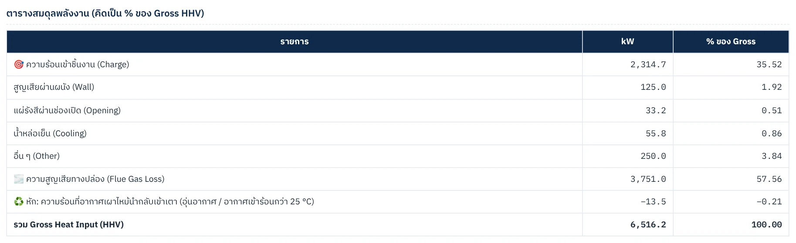
1
2
3
4
1
ชิ้นงาน 2,314.7 kW = 35.52 %
2
ปล่อง 3,751.0 kW = 57.56 % (ก้อนใหญ่สุด)
3
หัก ความร้อนที่อากาศนำกลับ −13.5 kW
4
รวม = 100 % ของ Gross (HHV)
ทุกแถวรวมกัน = 100 % พอดี — แถว "หัก" มีเพราะอากาศเข้า 30 °C สูงกว่าอุณหภูมิอ้างอิง 25 °C
ปล่อง 57.56 % = ไอเสียร้อน 950 °C + ไอน้ำจากการเผาไฮโดรเจน → เป้าหมายแรกของการประหยัด
💡 เคล็ดลับ
ตัวเลขแต่ละแถวตรงกับป้าย kW ของการ์ดในแท็บรายการความร้อน
แผนภาพ Sankey
คู่มือใช้งาน · การประเมินเตาอุตสาหกรรม (Process Heating Assessment) · ระดับ Free
18 / 32
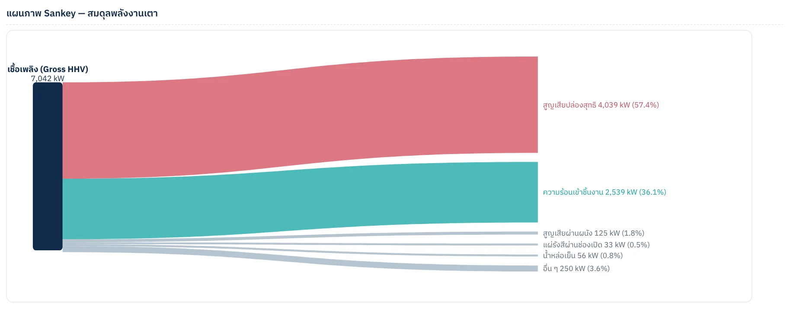
แถบน้ำเงินซ้าย = เชื้อเพลิง 6,516 kW (HHV) — ความหนาแถบตามสัดส่วน kW
แดง = สูญเสียปล่องสุทธิ 3,738 kW (57.4 %) หักความร้อนที่อากาศนำกลับแล้ว
เขียวอมฟ้า = ความร้อนเข้าชิ้นงาน · เทา = ผนัง ช่องเปิด น้ำหล่อเย็น และอื่น ๆ
💡 เคล็ดลับ
ใช้ภาพนี้อธิบายผู้บริหารได้ในภาพเดียว: "ความร้อนครึ่งหนึ่งออกปล่อง"
กราฟความไวต่อ %O₂
คู่มือใช้งาน · การประเมินเตาอุตสาหกรรม (Process Heating Assessment) · ระดับ Free
19 / 32
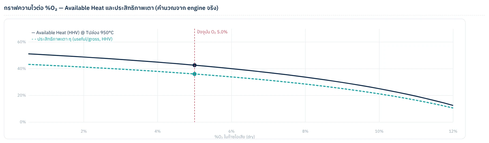
เส้นทึบ = Available Heat · เส้นประ = η เตา ที่ O₂ ต่าง ๆ (อุณหภูมิไอเสียคงที่ 950 °C)
เส้นแดงแนวตั้ง = O₂ ปัจจุบัน 5 % — จุดบนเส้นคือค่าของเคสนี้
เส้นลาดลงตลอด: O₂ สูง → อากาศเกินพาความร้อนออกปล่องมากขึ้น
⚠️ ระวัง
ลด O₂ ต่ำเกินไปเกิด CO และเขม่า — ปรับทีละน้อยพร้อมวัด CO ทุกครั้ง (ตามคลังวินิจฉัยของเครื่องมือ)
ลองเปลี่ยนค่า (What-if): O₂ และอุณหภูมิไอเสีย
คู่มือใช้งาน · การประเมินเตาอุตสาหกรรม (Process Heating Assessment) · ระดับ Free
20 / 32
| เปลี่ยนค่า | Gross (kW) | η LHV (%) | ค่าเชื้อเพลิง (฿/ปี) |
|---|---|---|---|
| ตามเคส (O₂ 5 % · ไอเสีย 950 °C) | 6,516 | 39.4 | 49,262,523 |
| O₂ 3 % (Excess Air 15.0 %) | 5,919 | 43.4 | 44,746,187 |
| O₂ 8 % (Excess Air 55.4 %) | 8,244 | 31.1 | 62,328,324 |
| ไอเสีย 850 °C | 5,763 | 44.5 | 43,567,755 |
| ไอเสีย 1,050 °C | 7,516 | 34.1 | 56,822,643 |
ทำเอง: แก้ช่องในแท็บแรก → ▶️ คำนวณ → อ่านผล → แก้กลับเป็นค่าเดิม
O₂ 8 % ตกไปช่วง Acceptable — ระดับเตาไม่มีการนำความร้อนกลับ
⚠️ ระวัง
O₂ และอุณหภูมิไอเสียเปลี่ยนผลมากที่สุด — สองค่านี้ต้องวัดให้แม่นและวัดขณะเตาเดินปกติ
ลองเปลี่ยนค่า (What-if): รายการความร้อน ฐานราคา และการอุ่นอากาศ
คู่มือใช้งาน · การประเมินเตาอุตสาหกรรม (Process Heating Assessment) · ระดับ Free
21 / 32
| กรณี | η LHV (%) | ค่าเชื้อเพลิง (฿/ปี) | อ่านว่า |
|---|---|---|---|
| ตามเคส | 39.4 | 49,262,523 | ค่าอ้างอิง |
| ลืมติ๊ก "อื่น ๆ" 250 kW | 43.3 | 44,830,252 | ความร้อนหายจากสมดุล → เชื้อเพลิงต่ำกว่าจริง |
| T ผิวผนัง 120 °C (แทน 85) | 37.8 | 51,319,751 | ผนัง 241.0 kW (เดิม 125.0) |
| ฐานค่าความร้อน LHV แต่ราคายังเป็นฐาน HHV | 39.4 | 44,429,819 | ค่าเชื้อเพลิงต่ำไป — ต้องแก้ราคาเป็นฐาน LHV |
| อากาศเผาไหม้ 350 °C | 51.9 | 37,351,747 | Gross 4,941 kW · AH 56.24 % |
η (LHV) ไม่เปลี่ยนตามฐานที่เลือก — เครื่องมือเทียบเกณฑ์ด้วย LHV เสมอ แต่ค่าเงินเปลี่ยนตามฐานของราคา
💡 เคล็ดลับ
อากาศเผาไหม้ร้อนขึ้น = เชื้อเพลิงลดลงชัดเจน — ใช้ปุ่ม Auto-ECM สร้างมาตรการนี้ให้ (ขั้นถัดไป)
ขั้นที่ 9
แท็บเปรียบเทียบมาตรการ: Auto-ECM
คู่มือใช้งาน · การประเมินเตาอุตสาหกรรม (Process Heating Assessment) · ระดับ Free
22 / 32
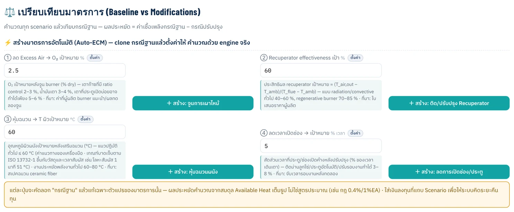
1
2
3
4
5
6
7
8
1
O₂ เป้าหมาย — 2.5 %
2
＋ สร้าง: จูนการเผาไหม้
3
Recuperator ε เป้า — 60 %
4
＋ สร้าง: Recuperator
5
T ผิวเป้าหมาย — 60 °C
6
＋ สร้าง: หุ้มฉนวนผนัง
7
% เวลาเปิดเป้าหมาย — 5 %
8
＋ สร้าง: ลดการเปิดช่อง
แต่ละปุ่มคัดลอกกรณีฐาน แล้วแก้เฉพาะค่าของมาตรการ — คำนวณด้วยสมดุล Available Heat เต็มรูป
Recuperator: อากาศหลังอุ่น = 30 + 0.60 × (950 − 30) = 582 °C — ใช้ ε ตามข้อมูลผู้ผลิต
⚠️ ระวัง
กดปุ่มเดิมซ้ำ = ได้มาตรการซ้ำอีกชุด — ลบชุดที่ไม่ใช้ด้วย 🗑️ ลบ ที่แถบ Scenario
ตารางเปรียบเทียบมาตรการ
คู่มือใช้งาน · การประเมินเตาอุตสาหกรรม (Process Heating Assessment) · ระดับ Free
23 / 32
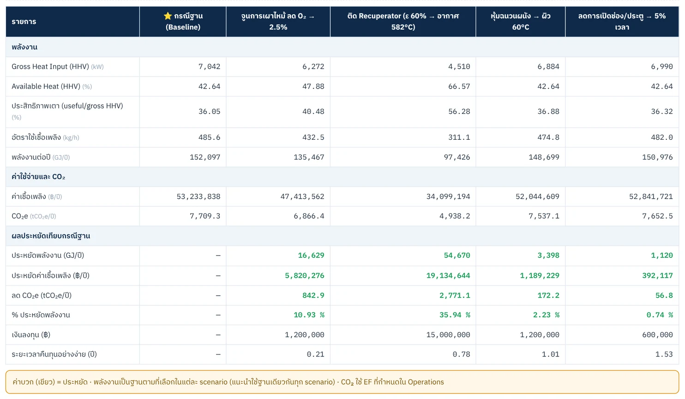
คอลัมน์ ⭐ = กรณีฐาน · คอลัมน์ถัดไปเรียงตามลำดับที่สร้าง
จูน O₂ 2.5 %: 5,386,075 ฿/ปี (10.93 %) · Recuperator: 17,707,174 ฿/ปี (35.94 %)
หุ้มฉนวน: 1,189,229 ฿/ปี (2.41 %) · ลดเวลาเปิดช่อง: 392,117 ฿/ปี (0.80 %)
คืนทุน 0.22 · 0.85 · 1.01 · 1.53 ปี (เงินลงทุนสมมุติ)
⚠️ ระวัง
ผลแต่ละมาตรการคิดเทียบกรณีฐานแยกกัน นำมารวมกันตรง ๆ ไม่ได้ — ทำหลายมาตรการพร้อมกัน ให้สร้าง scenario เดียวที่แก้ทุกค่า
แถบ Scenario: สลับ ตั้งชื่อ ใส่เงินลงทุน
คู่มือใช้งาน · การประเมินเตาอุตสาหกรรม (Process Heating Assessment) · ระดับ Free
24 / 32
1
2
3
4
5
6
1
⭐ กรณีฐาน (ลบไม่ได้)
2
Scenario ที่เลือกอยู่ (สีเข้ม)
3
＋ เพิ่มมาตรการ — คัดลอก scenario ที่เลือกอยู่
4
ชื่อ scenario
5
เงินลงทุน (฿) — ใช้คิดคืนทุน
6
🗑️ ลบ scenario นี้
กดชิปเพื่อสลับ — ทุกแท็บแสดงค่าของ scenario นั้น
เงินลงทุนเคสนี้ (สมมุติ): จูน O₂ 1,200,000 · Recuperator 15,000,000 · ฉนวน 1,200,000 · ประตู 600,000 ฿
⚠️ ระวัง
＋ เพิ่มมาตรการ คัดลอก scenario ที่เลือกอยู่ — ต้องการเริ่มจากกรณีฐาน ให้กด ⭐ ก่อน
อ่านสมดุลเมื่ออุ่นอากาศ: มาตรการ Recuperator
คู่มือใช้งาน · การประเมินเตาอุตสาหกรรม (Process Heating Assessment) · ระดับ Free
25 / 32
1
2
3
1
ไอเสียออกจากเตา 2,403 kW
2
หัก อากาศนำกลับ 1,007 kW (24.1 %)
3
รวม 100 %
ไอเสียออกจากห้องเตาร้อนเท่าเดิม แต่ recuperator ส่งความร้อนกลับมากับอากาศ → ออกปล่องจริง 1,395 kW
KPI ของ scenario นี้: Recuperator effectiveness 60.0 % · η (LHV) 61.5 %
ช่วง: Excellent — ระดับเตาที่มี Regenerative burner
💡 เคล็ดลับ
แถวปล่อง + แถว "หัก" = ความร้อนที่ออกจากปล่องจริงหลัง recuperator
แท็บ Field Audit: จุดตรวจวัด
คู่มือใช้งาน · การประเมินเตาอุตสาหกรรม (Process Heating Assessment) · ระดับ Free
26 / 32
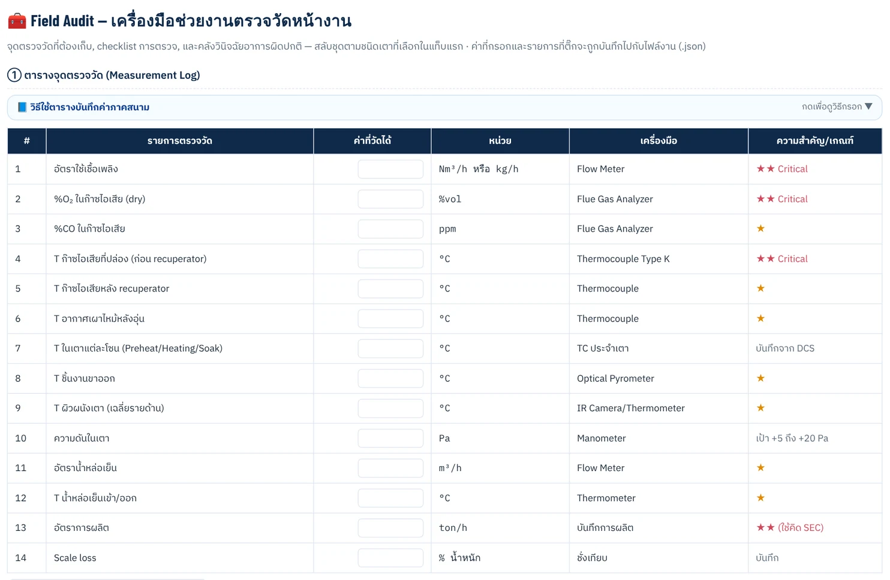
1
2
3
1
%O₂ ในไอเสีย — ★★ Critical
2
T ไอเสีย (ก่อน recuperator) — ★★
3
ช่องกรอกค่าที่วัดได้
ชุดจุดวัดเปลี่ยนตาม "ชนิดเตา" ในแท็บแรก · ★★ = ต้องมี · ★ = ควรมี
ปุ่ม ⬆ ใช้ค่าจาก Field Audit ส่ง O₂ T ไอเสีย T อากาศ T ผิว น้ำหล่อเย็น และอัตราผลิต เข้าโมเดลแล้วคำนวณให้
⚠️ ระวัง
ค่าที่กรอกในตารางนี้ยังไม่เข้าการคำนวณ จนกว่าจะกดปุ่ม ⬆ ใช้ค่าจาก Field Audit
Checklist และวินิจฉัยอาการ
คู่มือใช้งาน · การประเมินเตาอุตสาหกรรม (Process Heating Assessment) · ระดับ Free
27 / 32
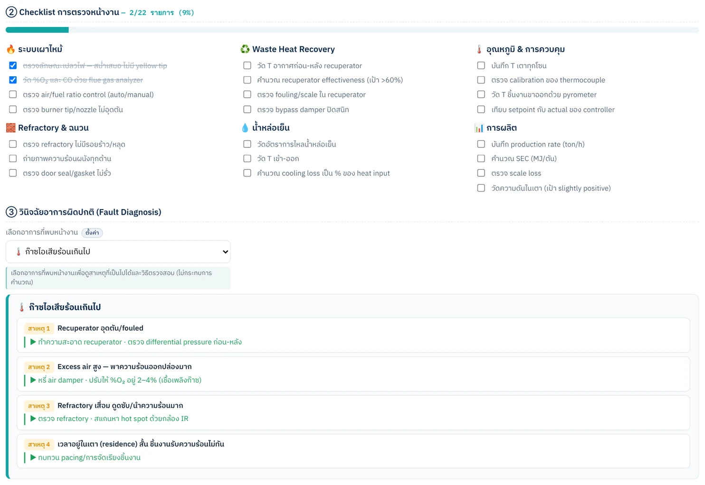
1
2
3
1
ความคืบหน้า checklist
2
เลือกอาการที่พบหน้างาน
3
สาเหตุที่เป็นไปได้ + วิธีตรวจ
ติ๊กรายการที่ตรวจแล้ว — แถบสีแสดงความคืบหน้า
ตัวอย่าง: "ก๊าซไอเสียร้อนเกินไป" มี 4 สาเหตุพร้อมวิธีตรวจ
ไม่กระทบการคำนวณ · ค่าที่กรอกและรายการที่ติ๊กบันทึกไปกับไฟล์ .json
ขั้นที่ 10
แท็บรายงาน และการเก็บงาน
คู่มือใช้งาน · การประเมินเตาอุตสาหกรรม (Process Heating Assessment) · ระดับ Free
28 / 32
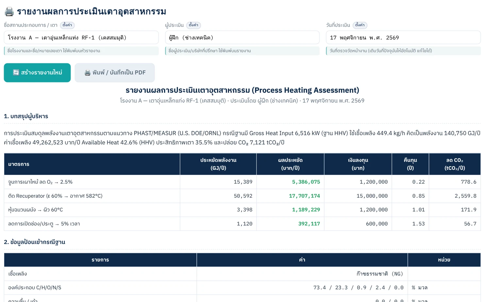
1
2
3
4
5
6
1
ชื่อสถานประกอบการ / เตา
2
ผู้ประเมิน
3
วันที่ (เติมวันนี้ให้)
4
🔄 สร้างรายงานใหม่
5
🖨️ พิมพ์ / PDF
6
ตารางสรุปมาตรการ
รายงานรวมทุก scenario: บทสรุป ข้อมูลป้อนเข้า สมดุล Sankey ตารางเปรียบเทียบ สมมุติฐาน
แก้ข้อมูลแล้วกด 🔄 ทุกครั้ง · 💾 บันทึกงาน (.json) เก็บทุก scenario + Field Audit
ข้อผิดพลาดที่พบบ่อย
คู่มือใช้งาน · การประเมินเตาอุตสาหกรรม (Process Heating Assessment) · ระดับ Free
29 / 32
✗ วัด T ไอเสียหลัง recuperator
✓ ใช้ค่าก่อนเข้า recuperator จุดเดียวกับ O₂
✗ วัด O₂ หลังจุดอากาศรั่ว
✓ O₂ สูงเกินจริง — ตรวจ probe และ seal จุดเก็บตัวอย่าง
✗ ราคาคนละฐานกับ HHV/LHV
✓ ราคา ฿/GJ ต้องฐานเดียวกับช่องฐานค่าความร้อน
✗ ใช้ 8,760 ชั่วโมง/ปี
✓ ใช้ชั่วโมงเดินเตาจริงจากบันทึกการผลิต
✗ ใช้กำลังผลิตติดตั้ง
✓ ใช้อัตราป้อนเฉลี่ยขณะเดินจริง (kg/h)
✗ ลืมติ๊กการ์ดที่มีในเตา
✓ การ์ดจางไม่ถูกนับ — ติ๊ก ✓ ทุกรายการที่มีจริง
✗ รวมผลประหยัดหลายมาตรการ
✓ คิดแยกกัน รวมตรง ๆ ไม่ได้ — ทำ scenario รวม
✗ อ่านป้ายช่วง η เป็นอุปกรณ์
✓ ป้ายบอกระดับที่มักได้ ไม่ได้บอกว่าเตามีอุปกรณ์อะไร
แบบฝึกหัด: โรงงาน B เตาหลอมอลูมิเนียม
คู่มือใช้งาน · การประเมินเตาอุตสาหกรรม (Process Heating Assessment) · ระดับ Free
30 / 32
| ข้อมูล | ค่า |
|---|---|
| ชนิดเตา · เชื้อเพลิง | เตาหลอม · LPG (ค่าในคลัง) |
| ชม./ปี · ราคา · EF | 5,000 · 520 ฿/GJ (HHV) · 63.1 |
| O₂ · T ไอเสีย · T อากาศ · T แวดล้อม | 7 % · 1,000 · 30 · 32 °C |
| ความชื้นอากาศ | 0.018 kg/kg |
| ชิ้นงาน อลูมิเนียม | 2,000 kg/h · 32→750 °C · หลอม 100 % |
| ผนัง | 80 m² · ผิว 110 °C · ε 0.9 · ลม 0.5 |
| ช่องเปิดสี่เหลี่ยม 1 ช่อง | 1.5×1.0 m · หนา 0.3 · 1,000 °C · 10 % |
| อื่น ๆ (ไม่มีน้ำหล่อเย็น) | 60 kW |
| มาตรการ | ลด O₂ เหลือ 3 % |
คำถาม — กรอกแล้วตอบ
1
Available Heat (HHV) = ______ % · Excess Air = ______ %
2
Gross = ______ kW · LPG = ______ kg/h
3
η เตา (LHV) = ______ % อยู่ช่วง ______
4
ลด O₂ เหลือ 3 %: ประหยัด ______ % = ______ ฿/ปี
💡 เคล็ดลับ
เริ่มจาก 📋 ตัวอย่าง แล้วแก้ทับ: เลือกชนิดเตา เชื้อเพลิง LPG และวัสดุอลูมิเนียมก่อน · ปิดการ์ดน้ำหล่อเย็น · ช่องเปิดเหลือ 1 ช่อง
เฉลยแบบฝึกหัด โรงงาน B
คู่มือใช้งาน · การประเมินเตาอุตสาหกรรม (Process Heating Assessment) · ระดับ Free
31 / 32
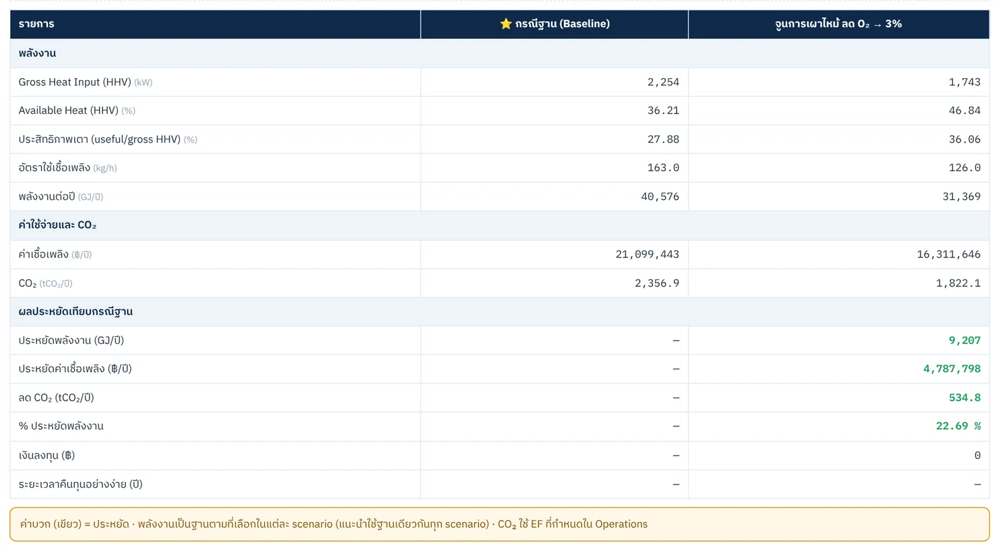
1) Available Heat = 36.21 % · Excess Air = 45.8 %
2) Gross = 2,254 kW · LPG 163.0 kg/h · ชิ้นงาน 628.4 kW
3) η (LHV) = 30.3 % → ช่วง 25–35% (Acceptable)
4) ประหยัด 22.69 % = 4,787,798 ฿/ปี · Gross ใหม่ 1,743 kW
✓ ผ่าน
ได้ตัวเลขตรงกัน = ใช้เครื่องมือเป็นแล้ว · ภาพแสดงตารางเปรียบเทียบของโรงงาน B
สรุป 1 หน้า (พิมพ์ติดไว้ข้างคอมพิวเตอร์)
คู่มือใช้งาน · การประเมินเตาอุตสาหกรรม (Process Heating Assessment) · ระดับ Free
32 / 32
1
📋 / 📂
โหลดตัวอย่างหรือไฟล์งาน .json
2
Operations
ชั่วโมงจริง · ราคา (ฐานเดียวกับ HHV/LHV) · EF · ชนิดเตา
3
เชื้อเพลิง + ไอเสีย
O₂ dry · T ไอเสียก่อน recuperator · T อากาศ
4
รายการความร้อน
ติ๊กการ์ดที่มีจริง: ชิ้นงาน ผนัง ช่องเปิด น้ำ อื่น ๆ
5
▶️ คำนวณ
Gross · AH · η (LHV) · สมดุลรวม 100 %
6
มาตรการ
Auto-ECM / ＋ เพิ่มมาตรการ · ใส่เงินลงทุน
7
รายงาน
🔄 สร้างใหม่ · 🖨️ PDF · 💾 .json
อ่านผลแล้วตรวจ
☐
T ไอเสียจุดเดียวกับ O₂
☐
ราคาฐานเดียวกับที่เลือก
☐
ชั่วโมงเดินเตาจริง
☐
เชื้อเพลิงที่คำนวณ ≈ มิเตอร์
☐
ผลมาตรการรวมตรง ๆ ไม่ได้
อ.หนึ่ง กลับทวี / Aj. Nueng Klubtavee
tripleeenergytools.com
tripleeenergytools.com